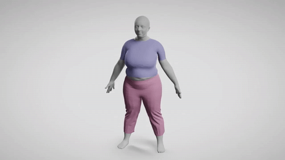
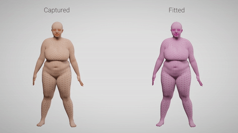
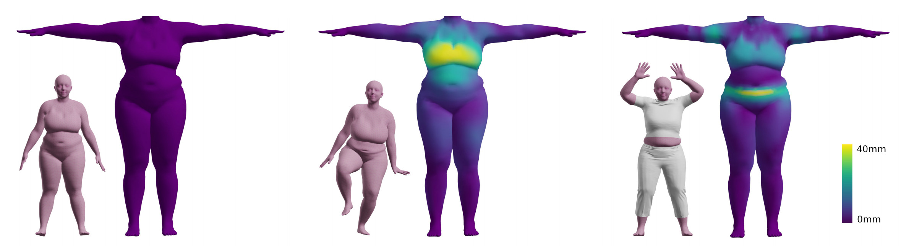

Description and Results
We present a hybrid model of soft-tissue animated avatar that combines a statistical human body model (SMPL) with an FEM mechanical simulaton. Our model supports highly-dynamic animations and external interactions by using a custom nonlinear and anisotropic material. This allows realistic soft-tissue deformations with tight cloth and self collisions.
We define deformation mechanics in an unpose reference space by computing the inverse skinning of the statistical body model. This allows us to preserve as much as possible of the data-driven static deformation. In contrast to previous work on modeling skin mechanics, in absence of dynamics and external forces our model matches the static deformations of the data-driven surface body model.

We estimate soft-tissue thickness and material parameters from unposed 4D scans. We show how our method correctly fits parameters with only 2 training sequences, and generalize well to unseen test sequences.

Below we show 3 examples of posed avatars (inset) subject to various soft-tissue deformations expressed in unposed space through a color map.
For a static pose (left), the unposed shape is undeformed and identical to the reference shape. For highly dynamic (center) or external interaction (right) scenarios, the unposed shape shows high-frequency local deformations